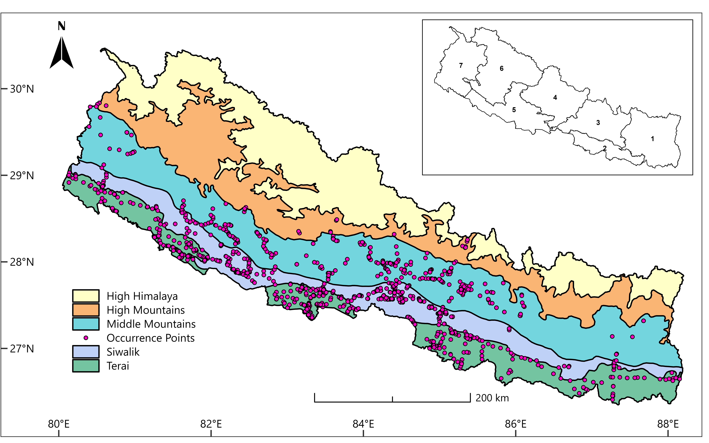
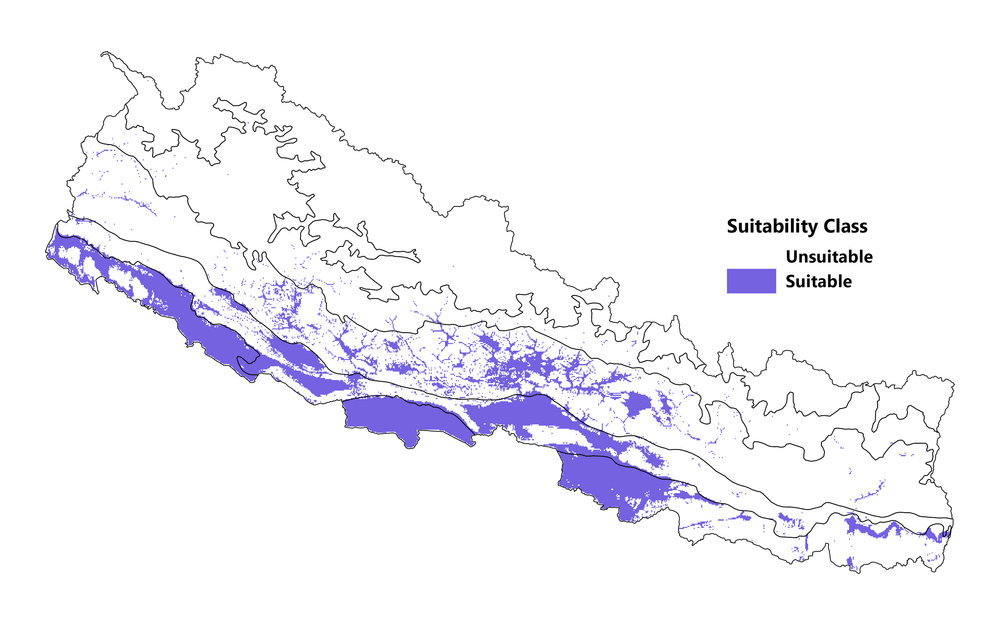
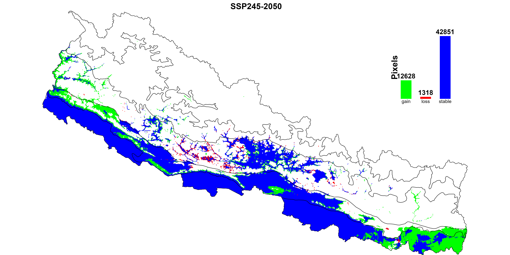
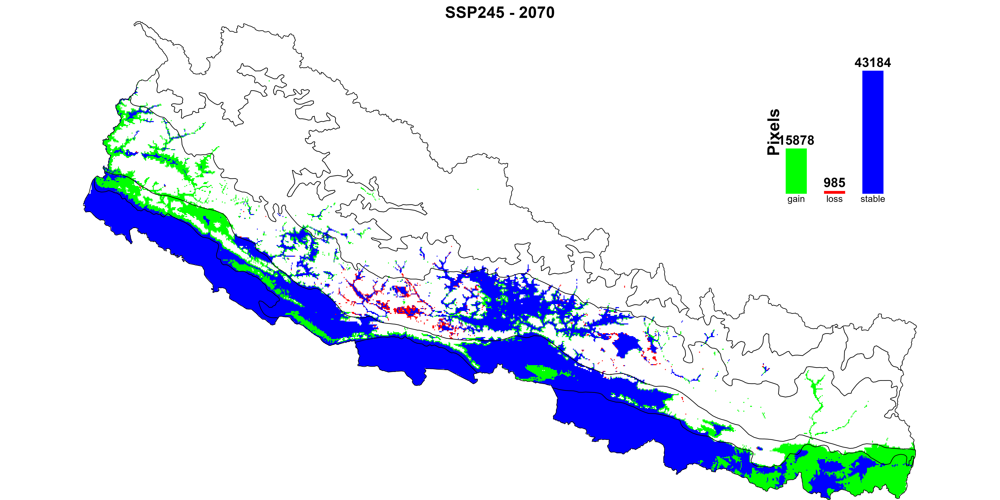
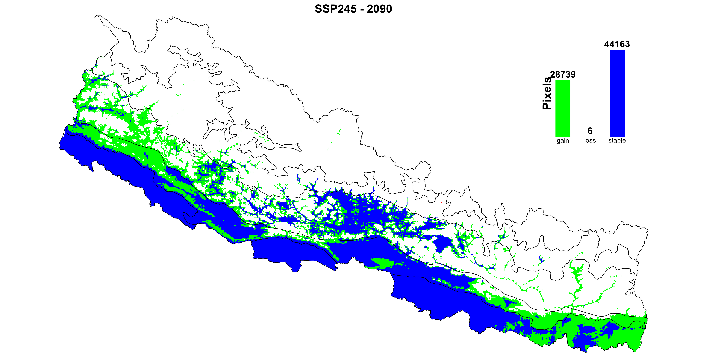
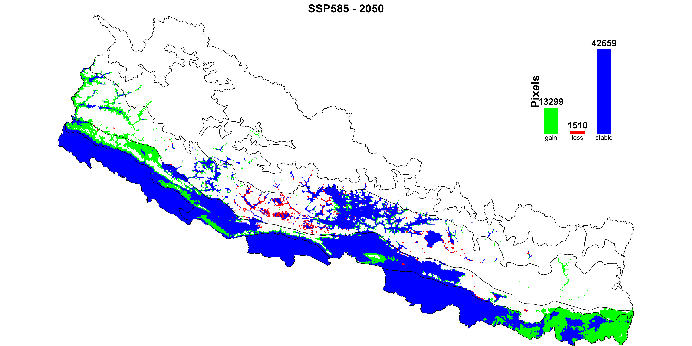
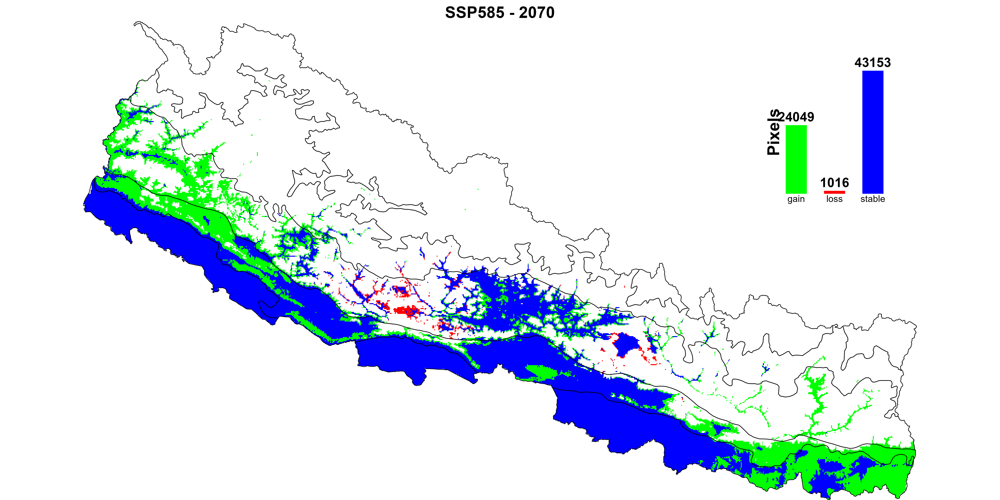
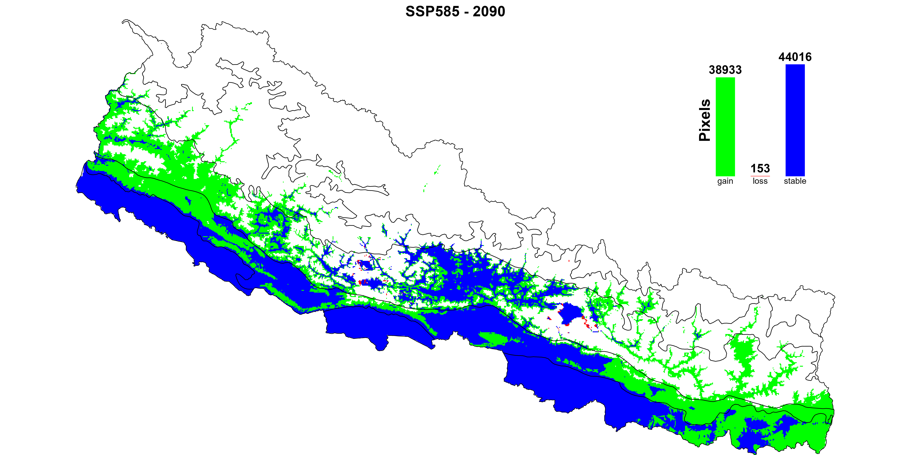

Abstract
Invasive alien species are among the major drivers of biodiversity decline, alongside land-use change and pollution. They pose a significant threat to biodiversity, particularly under changing climatic conditions. This study examines the distribution patterns of Parthenium hysterophorus L. in Nepal under current and future climate scenarios using ensemble species distribution modeling.
Species occurrence data were obtained from the Global Biodiversity Information Facility (GBIF), while 19 bioclimatic variables and two topographical variables were downloaded from WorldClim. Binary logistic regression was performed using five machine learning models and two statistical models, all meeting performance thresholds of area under the curve (AUC) > 0.85 and true skill statistic (TSS) > 0.6. Model outputs were ensembled using a weighted average approach based on TSS to generate final suitability maps. Among the predictors, mean diurnal range was the most influential, followed by the minimum temperature of the coldest month and precipitation of the coldest month.
Under current climatic conditions, P. hysterophorus occupies 22.54% of Nepal’s total area. The highest suitability is observed in the Terai (81.15%), followed by the Siwalik (50.23%), Middle Mountain (16.75%), and High Mountain (1.15%) regions, while no suitable area is found in the High Himalaya. A notable shift of species toward northern regions is projected in the future. To conclude, climate change is likely to exacerbate the invasion of P. hysterophorus in Nepal. The invasion shift towards the northern region can pose a significant threat to abandoned agricultural lands in the Middle Mountains. Continuous monitoring and management efforts are therefore essential to prevent its further spread into new habitats.
Study Area
The study was carried out in Nepal. Nepal is a landlocked country that is surrounded by India to the south, east and west and China to the North which covers the area of 1,47,516 sq.km.
Nepal is categorized into 5 physiographic regions which include High Himalaya (above 5,000 m, nival bioclimate), High Mountains (3,000,5000 m, alpine bioclimate), Middle Mountains (1,000–3,000 m, subtropical and temperate bioclimate), Siwalik (500–1,000 m, North to south: tropical bioclimate, Lowland Tarai (below 500m, tropical bioclimate) from north to south.

Current Geographic Distribution
Under current climatic conditions, Parthenium hysterophorus is modeled to occupy 33,247.11 sq.km, representing roughly 22.54% of Nepal’s total land area. The species currently heavily favors the warmer, lowland regions of the country, with habitat suitability rapidly decreasing at higher elevations.

Future Projections (2040-2100)
Climate change acts as a primary catalyst for the expansion of this invasive species. Under both moderate and extreme high-emission scenarios, the highly suitable habitat is projected to expand significantly, demonstrating a clear northward shift into higher elevations over the coming decades.
Moderate Emision Scenario (SSP245)



Extreme Emission Scenario (SSP585)



Conclusion & Management
Overall, the future climate change will likely to create additional suitable areas for the species causing negative impacts on the livelihoods, biodiversity and economy of Nepal.
The negative effects caused by invasive species can be effectively reduced by identifying them in our environment and implementing efficient control techniques. Some of the integrated management approaches such as mechanical removal, biological control, and safe herbicide use should be applied to reduce the spread of this species.